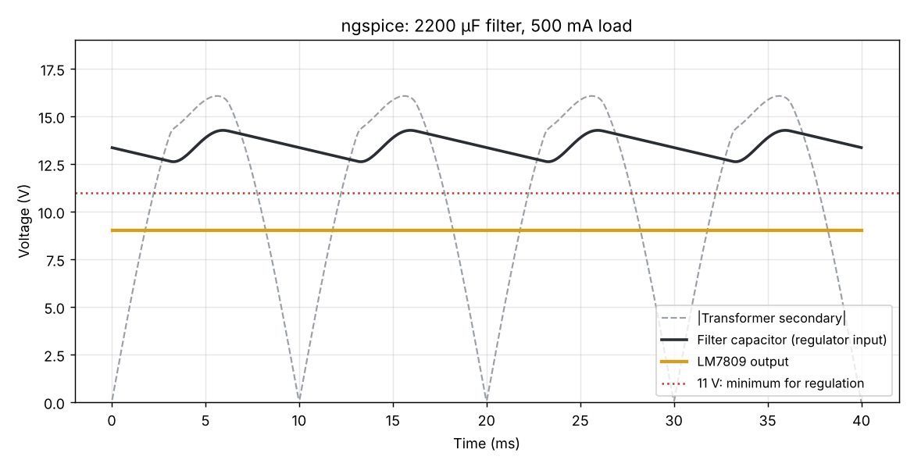

From mains to a steady 9 V
Each stage takes the voltage one step closer to clean DC. The numbers are peak values for our design at 500 mA.
Fuse
500 mA slow-blow on the primary cuts power if anything shorts.
Transformer
230 : 12 V, 1 A. Steps down and isolates you from mains. Peak 16.97 V.
Bridge rectifier
Four 1N4007s flip the negative half-cycles. Two diodes conduct, losing about 1.8 V.
Filter capacitor
2200 µF fills up at each peak and feeds the load in between. What's left is ripple.
LM7809
Burns off the difference as heat, as long as its input stays above 11 V.
Sizing the filter capacitor
The LM7809 needs about 2 V of headroom, so its input must never dip below 11 V. That sets how much ripple we can allow, and the ripple sets the capacitor.
| Step | Working | Result |
|---|---|---|
| Secondary peak | 12 V × √2 | 16.97 V |
| After two diodes | 16.97 − 2 × 0.9 | 15.17 V |
| Ripple allowed | 15.17 − 11.0 | 4.17 V p-p |
| Minimum capacitor | C = I / (2fΔV) = 0.5 / (100 × 4.17) | 1199 µF |
| Chosen, with 50 % margin | Next standard value | 2200 µF, 25 V |
| Regulator heat at 500 mA | (Vin,avg − 9) × I | ~2.5 W, needs a heat sink |
Known limit
At full 500 mA load the supply holds 9 V down to about 207 V mains. Try the "Low mains" preset: at 195 V the capacitor dips under 11 V and ripple reaches the output. A 15 V transformer or a low-dropout regulator would fix this, at the cost of more heat or a pricier part.

Parts
| Part | Why |
|---|---|
| 230 V / 12 V, 1 A transformer | Safe low voltage, galvanic isolation |
| 5 × 1N4007 | Four for the bridge, one across the LM7809 to protect it if the input is shorted |
| 2200 µF / 25 V electrolytic | Main filter |
| LM7809 + TO-220 heat sink | Fixed 9 V regulation |
| 0.33 µF in, 0.1 µF out | Keep the regulator stable |
| 500 mA slow-blow fuse, red LED + 680 Ω | Protection and power-on indication |
The primary side carries 230 V mains. Insulate every mains joint, use a fused plug and an enclosure, and never touch the board while it is plugged in.